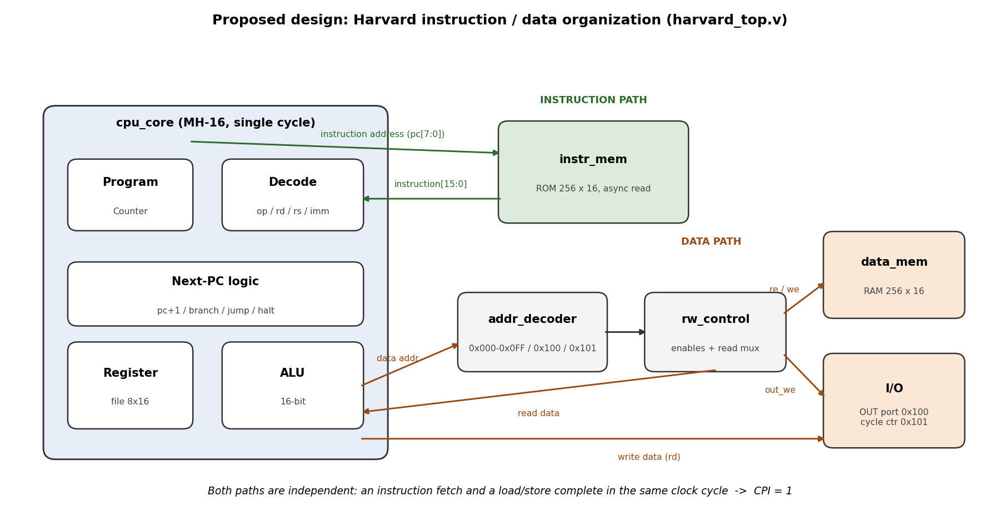
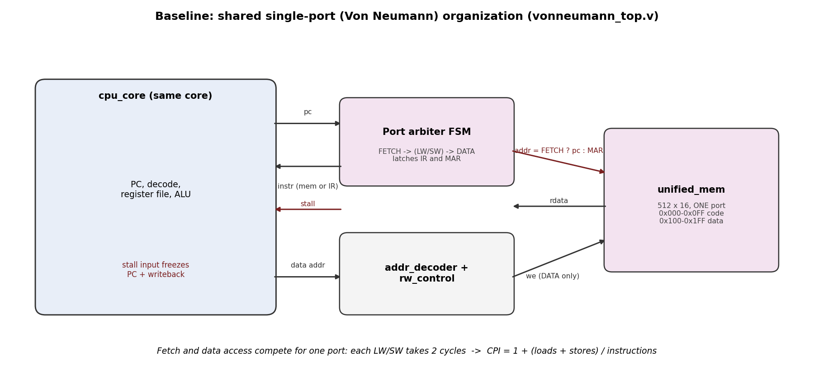
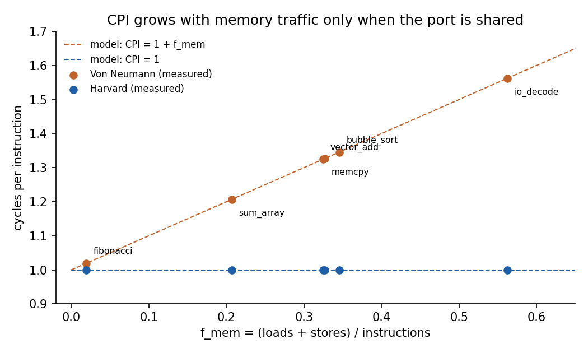
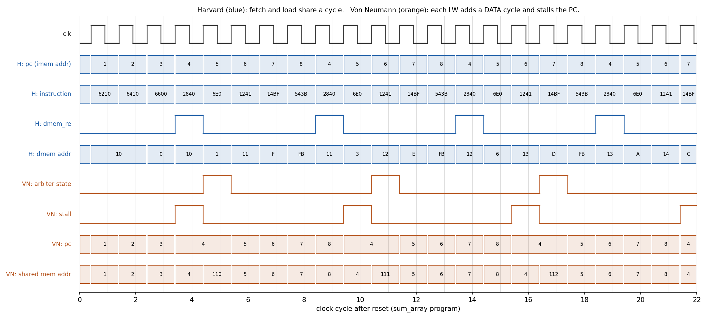

Abstract—Instructions and data reach a processor through its memory organization. When one memory port serves both, every load or store competes with the next instruction fetch. This structural hazard is the "Von Neumann bottleneck." We implement in Verilog a Harvard-style organization with an independent instruction memory and data memory. The design also contains a program counter, a data address decoder with memory-mapped I/O and read/write control logic. The same 16-bit single-cycle processor core (MH-16) is connected to a single-ported unified memory as a baseline, so the two organizations differ only in their memory system. Six assembled benchmark programs run on both machines side by side in a self-checking testbench. Both machines produce identical outputs and identical final data memories. The Harvard machine completes every instruction in one cycle (CPI = 1.000). The shared-memory machine follows CPI = 1 + fmem exactly, from 1.020 for a compute-bound program to 1.562 for a memory-bound one. This gives Harvard speed-ups of up to 1.56×. Yosys synthesis for a Xilinx 7-series target shows the cost of each organization in LUTs, flip-flops and distributed RAM. Phase II will add a shared lower-level memory behind split level-1 memories.
Index Terms—Harvard architecture, Von Neumann architecture, memory hierarchy, instruction memory, data memory, address decoding, structural hazard, Verilog, CPI.
A stored-program computer must move two kinds of information from memory: the instructions that say what to do and the data they operate on. Von Neumann's EDVAC design stored both in one memory reached through one path [1]. That is simple and flexible, but the path can carry only one access at a time. The Harvard Mark I used separate storage for instructions and data [2]. Modern processors combine the two ideas. Main memory is unified, but the level-1 caches next to the pipeline are split into an instruction cache and a data cache, a "modified Harvard" organization [3], [4].
This project, Project 9 of the course, implements a simplified Harvard memory organization at the register-transfer level, connects it to a processor, runs real programs on it and measures the effect of separating the paths. Our goals for Phase I are:
The EDVAC report [1] described a single store for both program and data. Treating instructions as data made self-modifying code, loaders and compilers natural. The Harvard Mark I [2] read its instructions from punched paper tape and kept its numbers in separate counters, so the two could never interfere. Hennessy and Patterson describe the cost of the shared design as a structural hazard: in a pipeline with one memory port, a load or store in the memory stage blocks an instruction fetch in the same cycle [3], [4]. Harris and Harris show the same conflict at the single-cycle level. Their single-cycle MIPS and RISC-V processors assume separate instruction and data memories, because one memory cannot be read twice in one cycle [8].
Wulf and McKee pointed out that processor speed was improving much faster than memory speed. Memory latency would therefore come to dominate performance unless the memory system hid it [6]. The standard answer is a hierarchy of small fast memories in front of large slow ones. Smith's survey of cache memories discusses unified versus split instruction/data caches [5]. Splitting doubles the bandwidth available to the pipeline and lets each cache be tuned to its access pattern, at the price of some capacity that a unified cache could share. Hill and Smith later quantified how associativity affects miss rates [15], and Jouppi showed that small helper structures such as victim caches and stream buffers recover much of the performance a simple cache loses [7].
The Harvard idea is common in embedded processors. ARM Cortex-M3/M4 cores have separate instruction-code and data-code buses (I-Code and D-Code), plus a system bus. Instruction fetches and data accesses therefore proceed in parallel [9]. The RISC-V ISA has a FENCE.I instruction. Software must execute it after writing instructions as data because the instruction and data paths may be separate and not coherent with each other [13]. This is the main programming-model cost of a Harvard organization.
Textbooks state the benefit of separate paths qualitatively, or inside a full pipeline where many effects mix. We isolate the memory organization: one processor core, two memory systems, the same programs, and cycle-exact counters. This lets us check the simple analytical model in Section IV against RTL simulation and synthesis.
We designed a small 16-bit instruction set so that programs are easy to write and to read in waveforms. It has eight 16-bit registers (R0 reads as zero), 16-bit instructions and 16-bit data words. The instructions are R-type ALU operations (add sub and or xor slt sll srl), addi, lw/sw with base+offset addressing, beq/bne, li (9-bit immediate), j and halt. The core (cpu_core.v) is single-cycle: decode, register read, ALU, data access and write-back all happen in one clock.
The core does not know which memory organization it is attached to. It exposes an instruction port, a data port and a stall input. A stall blocks the program counter and register write-back for one cycle. All memory-organization behavior therefore lives outside the core, so the comparison is fair.

harvard_top.v). The instruction path (green) and the data path (orange) have independent memories and buses.Fig. 1 shows the proposed design. Its modules are:
program_counter.v): an 8-bit register that updates only on commit. It selects the next instruction: pc+1, branch target, jump target, or hold on halt.instr_mem.v): a 256×16 read-only memory with an asynchronous read port. It is loaded from the assembler's hex file, and unused words hold HALT.data_mem.v): a 256×16 RAM with a synchronous write and an asynchronous read. Its output is forced to zero when it is not selected.addr_decoder.v): maps the 16-bit data address. 0x0000–0x00FF selects data memory, 0x0100 is a write-only output port, 0x0101 is a read-only cycle counter, and every other address raises fault.rw_control.v): combines the core's request, the commit signal and the decoder's selects into device enables and a read-data multiplexer. A write reaches a device only when the instruction commits, so a stalled store can never write twice. Writes to read-only space, reads of write-only space and accesses to unmapped addresses are flagged as bus errors.Because the instruction memory and the data memory have separate ports, a load or store and the next instruction fetch happen in the same cycle, so every instruction takes one clock.
The baseline (Fig. 2, vonneumann_top.v) connects the same core to one single-ported 512×16 unified_mem. Code is in words 0x000–0x0FF and data in 0x100–0x1FF. A two-state port arbiter controls the port. In FETCH the port address is the PC. ALU, branch and immediate instructions commit straight away. A load or store is copied into an instruction register (IR), and its data address goes into a memory address register (MAR); the core is stalled. In DATA the port address is the MAR and the latched instruction commits. Synthesis showed that our first baseline drove the port address from the core's combinational address output. That formed a structural loop from the memory's output, through the ALU, back to its own address. The MAR breaks this loop, as in classic accumulator machines.

Let N be the number of instructions executed, of which L are loads and S are stores, and let fmem = (L+S)/N. With separate ports, every instruction takes one cycle. With one port, every memory instruction takes two:
CPIHarvard = 1, CPIshared = 1 + fmem, speed-up = 1 + fmem.
This is the structural-hazard term of the classic pipeline CPI equation [3], here isolated from all other hazards.
All RTL is synthesizable Verilog [10], [14] split into one module per file. Programs are written in MH-16 assembly and converted to hex images by a two-pass Python assembler (asm.py). The assembler supports labels, pseudo-instructions (nop, mov, out), data directives and an .expect directive that records the values the program must output. The system testbench (tb_system.v) loads one program into both machines and runs them together. It then checks that (i) each output-port value matches the expected list, (ii) both machines halt with no bus error, (iii) both execute the same number of instructions and (iv) the final 256 data words are identical. Two unit testbenches cover the memories (267 checks) and the decoder with read/write control (13 directed cases, including stalled writes and illegal accesses). Simulation uses Icarus Verilog [11], waveforms are dumped as VCD, and synthesis uses Yosys [12] for a Xilinx 7-series target.
The six benchmark programs are chosen to cover a range of fmem:
All six programs pass on both machines, and all unit tests pass. Table I lists the counters reported by the testbench.
| Program | N | L+S | fmem | Harv. cyc. | Shared cyc. | CPIsh | Speed-up |
|---|---|---|---|---|---|---|---|
| fibonacci | 102 | 2 | 0.020 | 102 | 104 | 1.020 | 1.020 |
| sum_array | 87 | 18 | 0.207 | 87 | 105 | 1.207 | 1.207 |
| vector_add | 151 | 49 | 0.325 | 151 | 200 | 1.325 | 1.325 |
| memcpy | 297 | 97 | 0.327 | 297 | 394 | 1.327 | 1.327 |
| bubble_sort | 301 | 104 | 0.346 | 301 | 405 | 1.346 | 1.346 |
| io_decode | 16 | 9 | 0.562 | 16 | 25 | 1.562 | 1.562 |
The Harvard machine's CPI is exactly 1.000 for every program. The counter of cycles in which an instruction fetch and a data access happen together equals L+S, which confirms that every data access overlaps a fetch. The shared machine's CPI matches 1 + fmem to three decimal places (Fig. 3). Its cost is therefore a pure structural hazard. The speed-up depends only on how often a program touches data memory: 2% for fibonacci, about 35% for typical array code and 56% for the decoder test.

Fig. 4 shows the first cycles of sum_array. On the Harvard side the load at pc = 4 reads data memory in the same cycle in which the instruction is fetched. On the shared side the arbiter raises stall, the PC holds the value 4 for two cycles, and the shared address changes from 0x004 (fetch) to 0x110 (data word 0x10).

sum_array on both machines (rendered from the VCD dump). Blue: Harvard. Orange: shared memory.| Resource | Harvard | Shared |
|---|---|---|
| LUTs (LUT2–LUT6) | 441 | 489 |
| Flip-flops (FDRE/FDSE) | 347 | 324 |
| Distributed RAM (RAM256X1S) | 16 | 32 |
| CARRY4 | 62 | 54 |
Table II should be read with care. In the Harvard design the read-only instruction memory is folded into LUT logic for the program that was loaded (bubble_sort), and only data memory uses distributed RAM. The shared design keeps both code and data in 512 words of RAM, so its program can change at run time. It also needs the arbiter, a 16-bit IR, an 8-bit MAR and a two-way port-address multiplexer. Both designs include 192 flip-flops of 32-bit performance counters, which are instrumentation and not part of either memory system. Timing closure and maximum frequency will be measured with Vivado in Phase II. With asynchronous-read memories, the Harvard critical path is fetch → decode → ALU → data read → write-back. In the shared design the MAR splits this path across two cycles for memory instructions.
Separating the paths removes the fetch/data conflict completely. The price is a fixed split of capacity between code and data, two address decoders instead of one, and the loss of the simple "code is data" model. Program loading and self-modifying code need an extra path, which is why RISC-V needs FENCE.I [13]. The shared design is smaller in decode logic and more flexible, but its performance falls as programs touch memory more often. This is the trade-off the modified-Harvard hierarchy of real processors resolves. Small split memories close to the core give fetch and data their own bandwidth, and a larger unified memory behind them keeps a single address space.
| Member | Contribution (files) |
|---|---|
| Archit Gosain (lead) | MH-16 ISA definition, processor core, ALU, register file, program counter, performance counters, Harvard and shared top-level integration, the MAR fix found in synthesis, report Sections III–IV, repository management (rtl/isa_defs.vh, cpu_core.v, alu.v, regfile.v, program_counter.v, perf_counters.v, harvard_top.v, vonneumann_top.v, README.md). |
| Phalak Sharma (co-lead) | Memory subsystem: instruction memory, data memory, unified memory, data address map and decoder, read/write control. Fixed ROM initialization for synthesis. Report Abstract, Sections I–II and V, and final editing (rtl/instr_mem.v, data_mem.v, unified_mem.v, addr_decoder.v, rw_control.v, docs/report/). |
| Mukund Mangla | Verification: self-checking system testbench, memory and decoder unit testbenches, regression script, waveform rendering (tb/*.v, scripts/run_all.sh, scripts/plot_waveform.py). |
| Jatin | Two-pass MH-16 assembler and the six benchmark programs with expected outputs (scripts/asm.py, programs/*.asm). |
| Kumar Sanu | Block diagrams, Yosys synthesis flow and results, result charts and tables, demo video script and recording (docs/diagrams/, docs/synthesis/, scripts/plot_results.py, docs/demo/). |
We built and verified a Harvard-style instruction/data memory organization in Verilog and compared it with a shared-memory baseline built around the same processor core. On six programs the Harvard design always reaches CPI = 1. The shared design pays exactly one extra cycle per load or store, giving speed-ups from 1.02× to 1.56×, in agreement with the analytical model. Phase II extends the prototype into a two-level hierarchy with a shared lower-level memory.